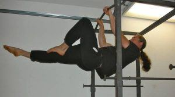
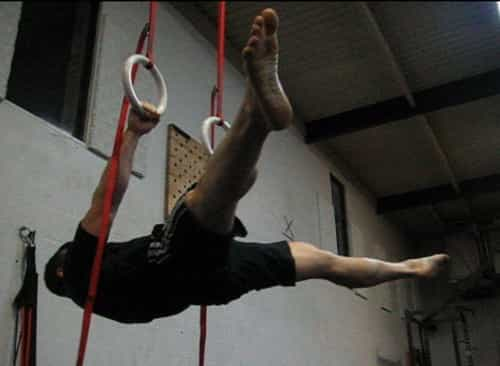
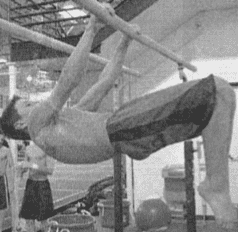
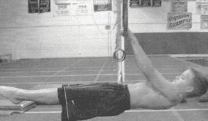

< < < Back
How To Complete The Front Lever Maneuver – Return Of Kings
In learning the fundamental gymnastic holds, you have already learned the complete progression of the back lever, and half of the front lever progression. And now, you will learn to complete the front lever. As usual, the progressive steps will involve gradually lengthening the legs until you have fully extended in the manner of the featured image.
And so without further ado…the last three steps.
The Advanced One Leg Tuck Lever
Recalling that the last step you should have mastered was the one leg front lever (in which one leg was straight and fully extended from the hip and the other leg was tucked to the torso), this similar step involves extending the “tucked” leg a little bit further.
So begin with the inverted straight hang, and lower yourself down as you did with the previous step. Extend one leg fully, straightening out the hip as you did before. However, instead of tucking the back leg as far back as it can possibly go, place the foot parallel with the extended leg’s knee, and then lower yourself into the hold position. I find it helpful to actually put the back foot on the knee, but be sure not to force that extended leg and hip downwards!
Of course, you alternate legs, and when you can do both legs for 10 seconds, move on.

The Front Straddle Lever
If you will recall the back lever progression, there was an optional step you could do called the straddle lever, in which you took some of the pressure off your muscles by splitting the legs as wide as possible while doing the back lever.
This is similar, but unlike the back lever I feel the front lever is benefited more with a straddle step. As usual, hit the inverted straight hang (perhaps you’re noticing how important it is for all these progressions), but then split your legs as wide as you possibly can, and lower yourself into it. You will feel that there is more strain upon you than the previous step, but the straddle posture reduces some of the stress, and thus it is a good intermediate for the more difficult steps.

The Half Front Lever
Another front lever progressive step that is similar to an equivalent back lever progression, the half front lever is the next to last step in the front lever series. As the name of this step implies, it involves the hips and thighs being fully extended, but the knees being bent.
Hit the inverted straight hang, keep the back, hips and thighs straight, but bend at the knees, making sure to keep the legs tight and together. Then lower yourself into that position. For many trainees, the half front lever marks the spot of an enormous jump in difficulty. This makes sense, as it is the step immediately before the front lever. From here, the trainee straightens out his legs a little more each time, gradually increasing the difficulty of this movement.

The True Front Lever
And here it is, the nigh-mythical front lever. As you can imagine, this technique is very difficult—I myself am still in between the half front lever and the true front lever.
Presumably, there are two ways to go about doing this: either you can hit the half front lever (with straight hips and legs, but bent knees) and then “open” your knees and straighten out into a front lever, or you can hit the inverted straight hang and then lower yourself into a front lever. Whichever one you choose will depend on a number of factors, notably what sort of apparatus you are utilizing. For example, my pull-up bar is built over a door frame, and thus it’s a bit difficult to lower from an inverted straight hang due to the door jamb getting in the way.
However you do it, realize that this is very difficult, and much like the true back lever, it will take you a while to accomplish. In doing so, you will make your core both much more aesthetically pleasing, and much more functionally strong, than the core and abdomen of your average gymgoer.

From here, you can attempt even more difficult variations of the front lever such as the “ice cream maker” or even the one-handed front lever. But considering how long it took me to get this far, don’t expect to see those for a while.
Read More: How To Complete The Back Lever